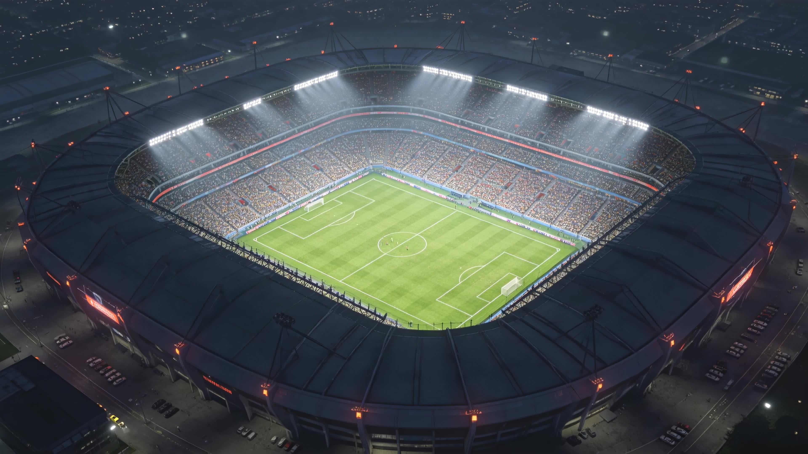
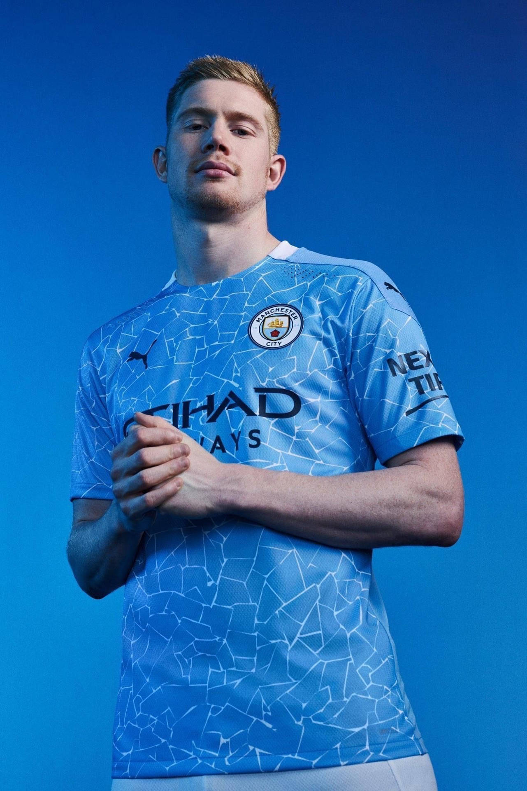
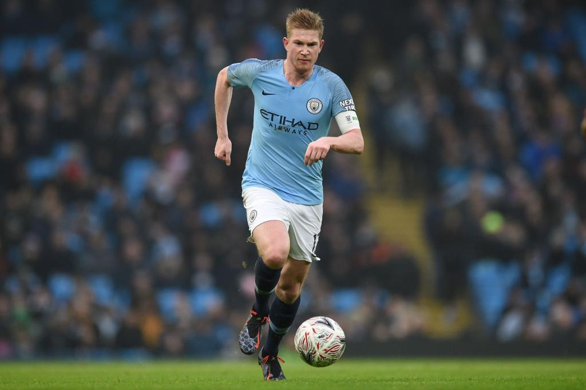
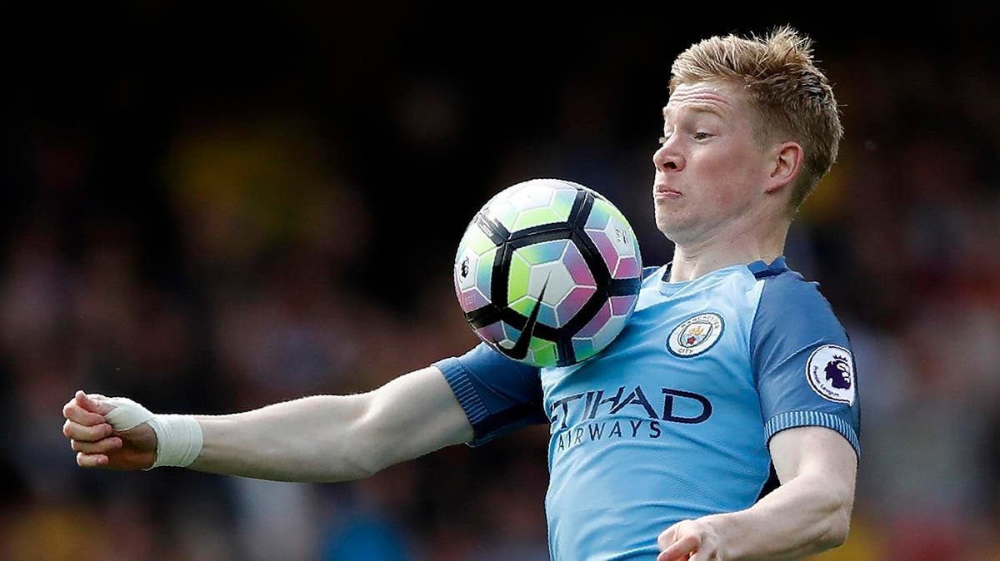
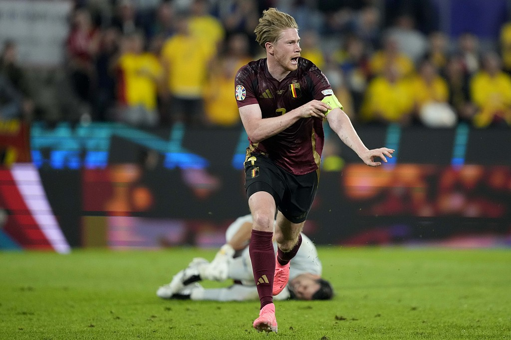
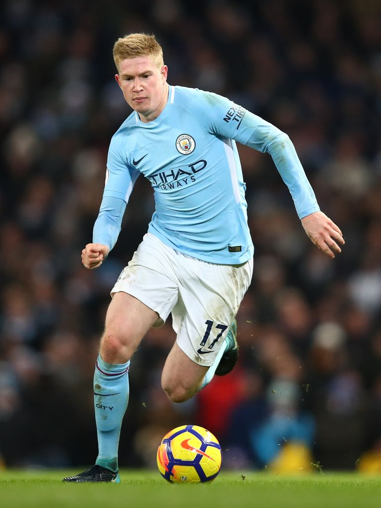

凯文·德布劳内（Kevin De Bruyne），1991年6月28日出生于比利时德龙恩，比利时职业男子足球运动员，司职中场，现效力于意大利足球甲级联赛的那不勒斯足球俱乐部。
俱乐部方面，德布劳内出道于根特青训营；2005年加入亨克青年队，2008-09赛季升入一线队。2012年加盟切尔西，同年租借云达不莱梅；2014年加盟沃尔夫斯堡；2015年8月加盟曼彻斯特城，效力曼城期间夺得6次英超冠军、1次欧冠冠军、2次足总杯冠军和1次世俱杯冠军。2025年6月，加盟那不勒斯。
国家队方面，2010年8月完成比利时国家队首秀，先后随队参加2014年世界杯、2016年欧洲杯、2018年世界杯、2020年欧洲杯、2022年世界杯和2024年欧洲杯六届大赛。2026年5月15日，入选比利时国家队出征2026年国际足联世界杯大名单。
一些赛场与生活中的影像记录。

带球推进

比赛中的第一脚触球

欧洲杯赛场

带球创造空间
夜色下的主场
官方定妆照
从亨克到那不勒斯，一段完整的中场大师之路。
2025-26赛季数据与生涯里程碑。
数据来自生涯记录的部分赛季；进球 / 助攻为当季合计，口径随赛季来源略有差异。